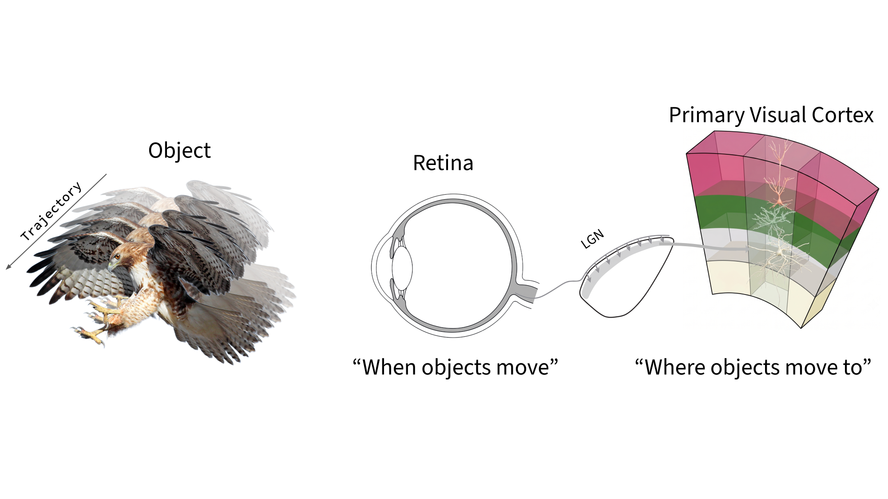
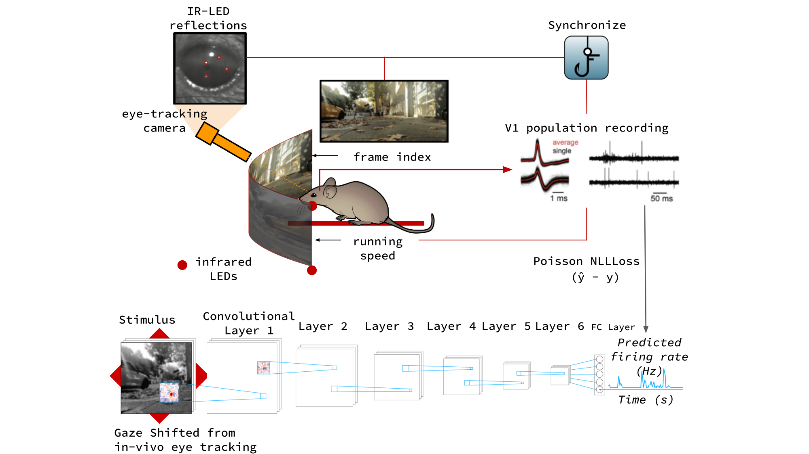
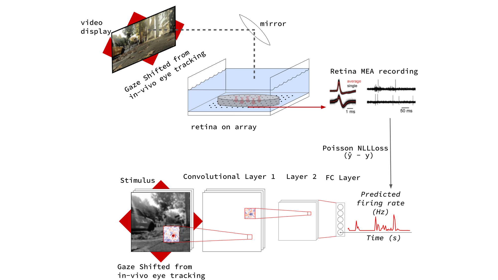
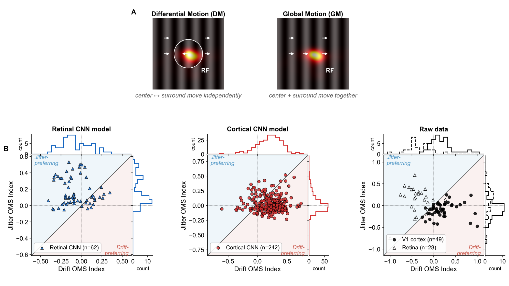

Retinal and Cortical Model Manifolds
Our model manifold analysis reveals drastically different topologies in the retinal and cortical networks. Toggle between stimulus probes below to compare how each region organizes its responses.

To survive, animals must detect object motion to discriminate what lies in their field of vision. While object motion sensitivity in the retina detects the time and location of external motion, it does not give us an explanation of where that object is heading. Since the efficient encoding and untangling frameworks have been offered, we have understood that downstream regions inherit and transform upstream outputs for their higher order objectives. If retinal motion detection is passed down to higher visual areas, does the primary visual cortex inherit and transform object motion detection from the retina? Here, we investigate whether the mouse primary visual cortex has object motion sensitive (OMS) properties using naturalistic virtual reality, modern computer vision methods, and single-cell recordings of the retina and cortex. Comparing neural responses to differential motion and global motion, we find that the retinal OMS cells detect “when” an object moves and the cortex detects “where” the object moves to. Our model manifold analysis of the retinal and cortical networks reveals drastically different topologies in these visual regions suggesting that the mouse brain has convergent and distributed motion detection computations along the visual hierarchy.

In-vivo cortical experiment — V1 population recording

Retinal experiment — retina-on-array MEA recording
We record neural responses to naturalistic virtual reality with gaze shifted from in-vivo eye tracking, capturing V1 population activity in-vivo and retinal responses on a multi-electrode array. Convolutional neural network models of the retina and cortex are trained to predict single-cell firing rates from the same gaze-shifted stimulus, providing a shared computational substrate for comparing the two regions.

Differential motion (DM) moves the center and surround independently, while global motion (GM) moves them together. Comparing jitter and drift OMS indices across the retinal CNN, the cortical CNN, and the raw recordings, we find that retinal OMS cells are jitter-preferring—detecting when an object moves—while cortical cells shift toward drift-preferring responses that encode where the object moves to.
Our model manifold analysis reveals drastically different topologies in the retinal and cortical networks. Toggle between stimulus probes below to compare how each region organizes its responses.
Neural manifolds computed directly from the raw V1 population recordings. Toggle between neural stimulus conditions below to fly through each manifold.

V1 raw-data neural manifold — WN probe

V1 raw-data neural manifold — NS1 probe

V1 raw-data neural manifold — NS2 probe
Notably, our end-to-end trained cortical models appear to recover manifold shapes and distributions strikingly similar to those of the raw V1 neural manifold.
Evaluated on the Moving Camouflaged Animals (MoCA) dataset, the retinal and cortical models reveal a division of labor: the retinal model produces focal, spatially invariant activations that flag that a camouflaged animal is moving, while the cortical model produces an extended, orientation-tuned activation spanning the animal's body that resolves where it is and how it is oriented.

Arctic fox (MoCA). Left: raw video. Center: retinal-model activation — focal to animal motion. Right: cortical-model activation — extended across the animal's body.
@article{weddington2026oms,
author = {Weddington, Javier C. and Au, David D. and Melander, Joshua B. and Faragalla, Youssef and Alaoui, Zaki and Baccus, Stephen A.},
title = {Convergent distributed object motion detection along mouse visual hierarchy},
journal = {In Review},
year = {2026},
}